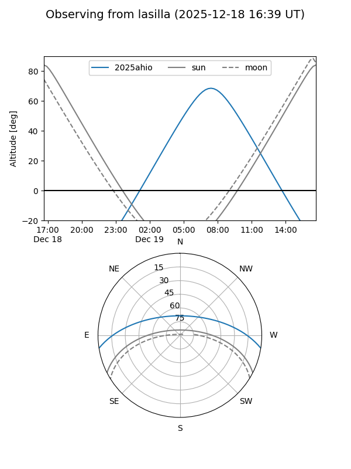
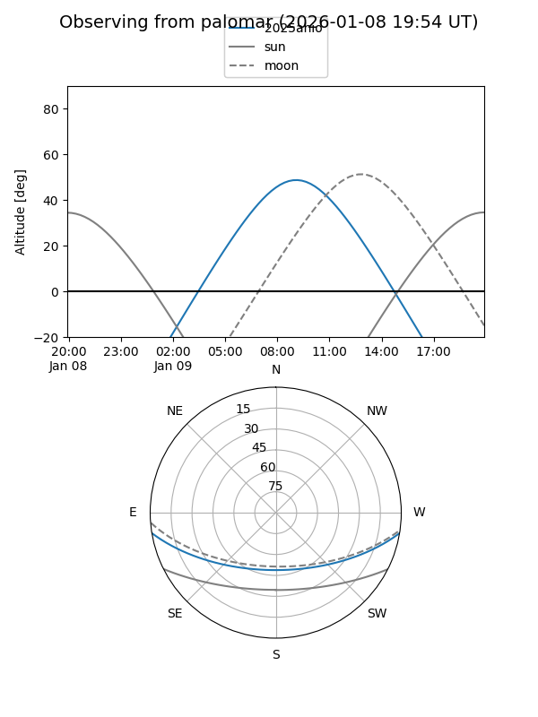
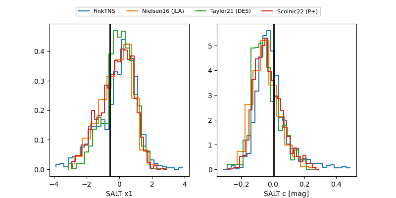

2025ahio
Target 2025ahio at 2025-12-31 16:59
Aliases and brokers:
FINK:
Lasair:
ALeRCE:
TNS:
YSE:
alt names
ZTF25achwuhy (ztf,fink_ztf)
2025ahio (tns,yse)
Coordinates:
equatorial (ra, dec) = 128.0206,-7.75952
equatorial (HMS+DMS) = 08:32:04.95,-07:45:34.26
galactic (l, b) = (232.1289,+18.26198)
Flags:
Photometry:
last ztfg=19.82, ztfr=19.59
3 ztfg, 1 ztfr detections
Lightcurve

Visibility


Additional plots
